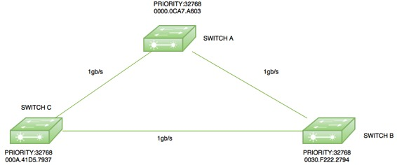
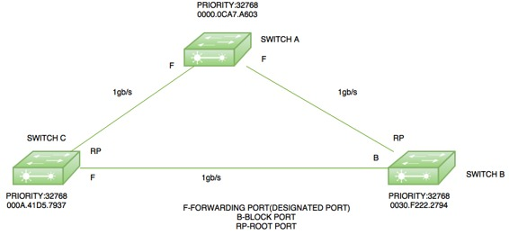

Redundant links are used to provide back up path when one link goes down but Redundant link can sometime cause switching loops. The main purpose of Spanning Tree Protocol (STP) is to ensure that you do not create loops when you have redundant paths in your network.
Spanning Tree Protocol (STP) –
As IEEE STP is used to make a loop free network by monitoring the network to track all the links and shut down the redundant ones. These are some important terms related to Spanning Tree Protocol:
- Bridge Priority Data Unit (BPDU) – It contains the Bridge I’d, Sender’s Bridge I’d, Cost to the Root Bridge, Timer values on Root Bridge. All switches exchange BPDU in order to elect root bridge. The switch with the lowest Bridge I’d will become the root bridge.
- Bridge I’d – It is a 8-byte field which is a combination of bridge priority (2 bytes) and Base Mac address (6 bytes) of a device. If there is a tie on bridge priority then the Base Mac address is considered.
- Bridge Priority – It is priority, which is assigned to every switch, 32768 by default.
- Root Bridge – The root bridge is the bridge with lowest Bridge I’d. All the decisions like which ports are the root ports (the port with best path to the root bridge) are made from the perspective of root bridge.
- Path cost – A switch may encounter one or more switch in the path to the root bridge. All the paths are analysed and the path with the lowest cost will be selected.
Speed Link Cost 10 Mbps 100 100 Mbps 19 1 Gbps 4 10 Gbps 2
Designated port – The port which sends best BPDU i.e ports on the root bridge will be in forwarding state.
Root port – The port which receives the best BPDU on non root bridge. Criteria for selecting root port:
- Lowest path cost to reach root bridge
- Lowest sender Bridge I’d
- Lowest sender port I’d
(Port priority + Port number) – Port priority is by default 128 and port number is the switch interface number.
Election procedure –
All the switches in the network declare themselves root bridge and start exchanging their own BPDU. The BPDU with the lowest bridge I’d will be considered as superior. Now the switch receiving the superior BPDU make changes in its own BPDU and carry forward to its neighbours. It changes the value of root Bridge I’d with its superior BPDU bridge I’d. This process goes on until all the switches are satisfied with which bridge have the lowest bridge I’d and hence that switch will be declared as root bridge.
Now according to the criteria, the root ports will be selected and then the port left will be in blocking mode.
Example –

Here is a small topology with three switches switch A (mac address-0000.0ACA7.A603), switch B(0030.F222.2794) and switch C(000A.41D5.7937) with all having default priority (32768).
Root Bridge election –
As all the switches have default priority therefore there is a tie on the basis of priority. Now, the switch with the lowest Mac address will become a root bridge. Here, switch A will become the root bridge as it has the lowest Mac address. Therefore, the ports of switch A will be in forwarding state i.e designated port.

Root Ports Election –
The root ports are selected on non root bridges, i.e. switch B and switch C. Now, for instance if switch C choose the path through switch B then the cost will be (4+4=8) but if it chooses the directly connected path to switch A then the cost will be 4 therefore both switch B and switch C will choose the ports connected to switch A as their root ports.
Now, the only thing left between is to find which port will be in forwarding mode and blocking mode respectively. Now as the link between switch B and switch C as the same cost to the root bridge therefore the switch with lowest bridge I’d will be in forwarding mode therefore switch C port will be in forwarding mode and switch B port will be in block mode.